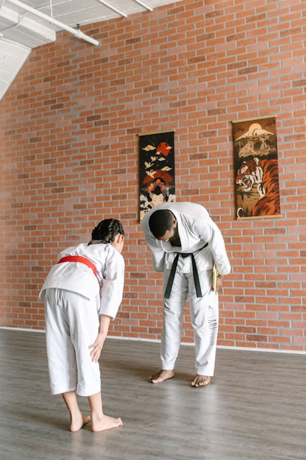

Greetings
"こんにちは" (Konnichiwa) is a versatile greeting for most situations. "おはようございます" (Ohayou Gozaimasu) is used for good morning, and "こんばんは" (Konbanwa) for good evening.
Bowing
A cornerstone of Japanese etiquette, the bow is a way to show respect. The deeper the bow, the greater the respect conveyed. A slight nod for acquaintances, a deeper bow for superiors or elders.